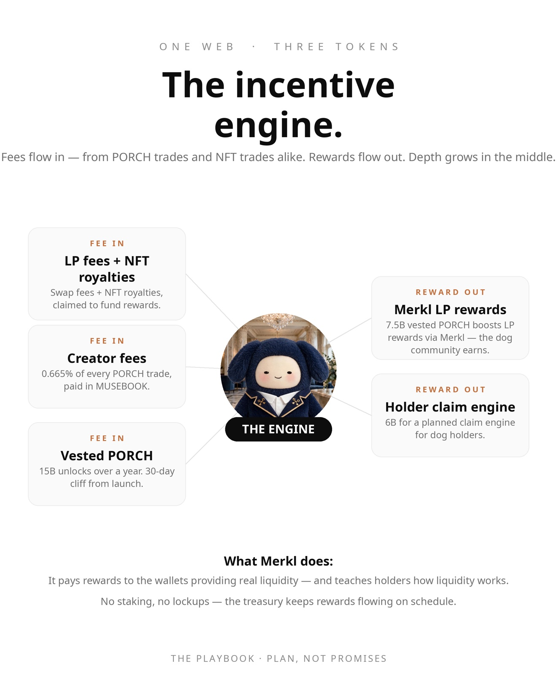

P.O.R.C.H is the coin engine under the town: liquidity pools where the town's coins sit, earn fees on every trade, and pay holders back.
Check these on Blockscout before trusting anything on this page.
| $PORCH token | 0x4B434541873f171aB70D7d2F3a48b0f0b0f13ba3 "Porch", symbol PORCH. 100B fixed supply. |
| $MDOG token | 0x4CAF2e6eC0fCBef77314566A9884643512EF8bfC "Muse Dog", symbol MDOG. |
| $MUSEBOOK token | 0x91a2dae9699f0b82540b5886b0d8759c22820ba3 $MUSEBOOK — the coin fees arrive in. |
| $PORCH/$MDOG pool | Uniswap V4 — PoolId 0x3fb159d5ab470476e4a2e3f6b364fc452b0af3c785d8bb2d677af41dea6f8557 V4 pools live as a PoolId inside the PoolManager — creation transaction. $PORCH is currency0, $MDOG currency1. |
| $PORCH on Bankr | bankr.bot/terminal/trade — $PORCH on Robinhood Chain |

$PORCH isn't a trading coin — you win by sitting. Coins sit in the pools, the town trades around them, fees come to you. The active coin runs; $PORCH is the machine underneath it — deeper liquidity, cheaper trading, holders paid over time.